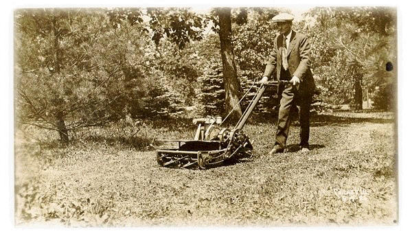
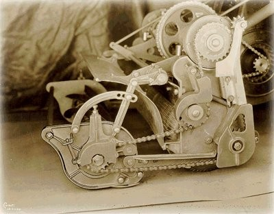
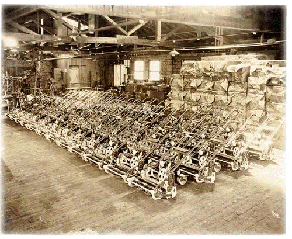
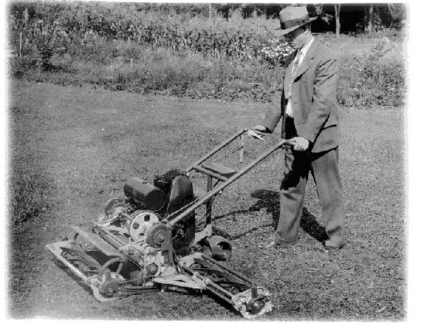
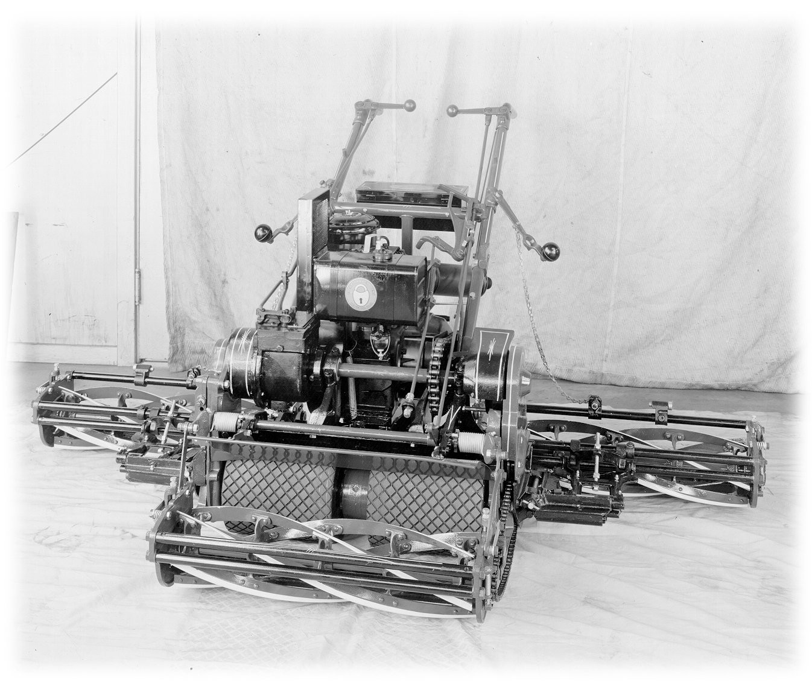
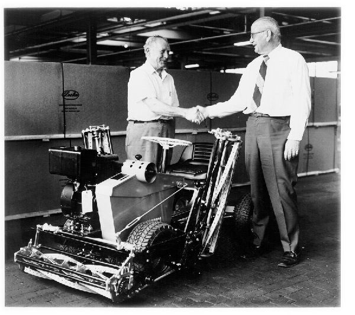
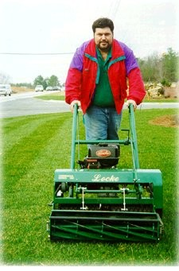

|
|
 |
A History of Technical Innovation
"The Locke Power Reel Mower"
| The Locke Steel Chain
Co. was formed in 1895. S.D Locke had devised a new patented
method of manufacturing link chain from steel strip rather than
the standard method of casting. This was not only a major
industrial innovation but was also considered a technical triumph.
His son, S.D. Locke Jr., of Bridgeport, Conn., his successor,
began design and prototype work in the early 1920’s on a
self-propelled, self powered lawn mower. His interest in lawn
mower development was derived from his dissatisfaction with the
quality and performance of the mowers he had purchased for his
estate. He went about to develop a precision
cutting machine whose quality would span generations. The product
of this effort was the 1925 21" mower, which is the forerunner of
a long line of mowers built to exacting standards of
performance, and durability, as well as bearing the namesake of
the originator.
|
| This mower (see photo at right, June 1926) had a newly developed
Briggs & Stratton "FI" engine, a swinging caster wheel, a
counterbalanced reel that was full floating, a bevel gear
differential housed between two wide traction rollers, and
fingertip controls for reel lift and clutch engagement. So
successful was this first mower that it was decided to enter into
a manufacturing venture dedicated to the advancement and
production of Locke power reel mowers. A team of engineers,
craftsman, and planners set about the work of this project, and
technical achievement was evident in the fall of 1927. |
 |
| The following year,
1928, is commonly known as the first model year for the Locke
power reel mower. This new mower was available with such options
as a grass catcher and a back-lapping arrangement. The mower was
known simply as the 25"Power Reel Mower and bears striking
resemblance to the mowers produced today in terms of size, shape,
weight, details such as the tool box, handle-bars, controls, self
tensioning chain drives, and construction in general. Many of the
design and handling features that were present in this first
production Locke mower are firmly embodied in our most recent
models. (Below photo taken March 1928) |
|
 |
| After a
successful but limited run in 1928, production was stepped up in
1929 to meet the market demand created by this efficient machine,
and the dedicated people behind the Locke power reel mower proved
more than ready to meet this challenge. (See photo below of
completed mowers taken May 1929) |
|
 |
| During the busy year of
1929, the research and development department came up with another
innovation. They took a 25" mower frame, installed a larger
engine, attached side reels to the frame with special carrying
brackets that allowed the side reels to follow the ground contour
like the front reel, and designed a way to get the engine power to
the new side reels. Due to the fact that the 25" mower was
originally designed and built so substantially, a different frame
was not needed to support the extra weight, power loads, and
attachments. This resulted in a mower well suited for large areas
with a price only nominally more than the single mower. The
product of this effort was the 70" Locke triplex, later to become
known as the item #6. (See below photo of prototype triplex taken
October 1929). The following year, 1930, saw the introduction of
the 70" Locke triplex mower, which would become the flagship
product of Locke Power Reel Mowers for the next 50 years |
|
 |
| In 1932, a 30"
cut-single unit mower was introduced. Later to become known as
item 5 & 5A, the 30" single became a favorite of landscape
professionals. From a mowing efficiency perspective, it is
interesting to note that a 5" increase in cutting width results in
a 40% increase in productivity. The 25" mower can cut .5 acres per
hour while the 30" cuts .7 acres per hour.
By 1932, the first sulkies were offered. These were ball
bearing units with iron wheels. 1932 also marked the first year
that rubber traction rollers were offered as an option. This
improvement proved to be so successful that, with the exception of
rubber shortages during the war, all mowers thereafter would be
shipped with rubber traction rollers. Several new advances were on
the horizon and in 1933 a 75" triplex was offered. This mower
would cut at the rate of 2 acres per hour and became a favorite
tool of contractors and estate keepers responsible for maintaining
large turf areas. In 1934, pneumatic tires replaced the iron
wheels. Production was suspended in 1942 and resumed in 1946 as
very few units were shipped during World War II.
In 1949, a reverse gear option was offered on the 70", and 75"
triplex mowers. This transmission was specially designed and built
in the same plant as the mowers, as it is today. The reverse gear
transmission uses a planetary gear set, a multi-plate friction
pack, a brake band and drum, and is sealed with oil in its own
housing. The transmission simplified the handling of these heavy
mowers (725 pounds), and was so successful that it was offered on
the 25" and 30" mowers in 1951. (see photo below of Locke 70"
reverse triplex which will later be known as item 10) |
|
 |
| After 1959, model #, and
width of cut were associated with item numbers as follows: |
| Item 2 25" single unit
mower |
| Item 5 30" single unit
mower |
| Item 22 30" single unit
mower with reverse |
| Item 6 70" triplex mower |
| Item 10 70" triplex mower
with reverse |
| Item 8 75" triplex mower |
| Item 23 75" triplex mower
with reverse |
| In the late 1960’s, the
mowers were redesigned, taking advantage of many new industrial
processes and the new standard metric size of bearings, shafts and
other power transmission components. Although this was a corporate
move to improve efficiency, care was taken to insure that the
legendary handling, productivity, and quality were not
compromised. In 1966, 7-blade reels were offered as an option and
were highly valued in southern climates. Up to this point, 5-blade
reels were standard on all mowers. |
|
 |
|
Locke mowers have been and will
continue to be heavy-duty, precision instruments built to hold up
to the most rigorous demands of landscape professionals. No
capricious model year or cosmetic changes are instituted, although
improvements are continually incorporated into all models. Present
day Locke mowers have an outstanding pedigree and we at Locke plan
to continue to produce mowers that will be recognized around the
world as the ultimate response to the need for the highest degree
of quality lawn care.
|
|
Locke Power Reel Mowers have set the standard for turf care at
some of the most prestigious grounds around the world. These
grounds include the White House, the Kremlin, National Park
monuments, L.A. Dodger stadium, Yankee Stadium, as well as yours.
We welcome your comments and suggestions at Locke. If you do
not presently own a Locke, we encourage you to try out a Locke
Power Reel Mower and experience for yourself Locke’s legendary
cut, performance, and durability. |
 |
|
The first riding mower was developed in 1971. It was known as
the Maxi mower. A newly designed chassis, with a front mounted
engine, utilized three 30" reels in order to deliver an 87"
cutting width. The heart of this mower was the new Eaton model 6
hydrostatic transmission that allowed unlimited variable traction
speeds along with reverse in the same control mechanism.
In 1973, Locke reentered the golf market (A putting green mower
was built in the early 1930’s) with a 70" triplex greens mower.
The new mower was called item # 7. They enjoyed only a limited run
and were discontinued in 1976. The Maxi mower was updated and
changed to the Maxi-II in 1974.
1976 marked the first year of the "60 series"mowers. At first,
a 25" single mower, item # 60 was offered. These machines were a
separate product line and were lower in cost than the "standard
series". The sixty series mowers used belts and pulleys instead of
chains and sprockets. This allowed the reel and traction drives to
be engaged with out the clutches and related hardware. Also, a
welded frame replaced many castings further reducing lead times
and expenses. The 60 series mower grew in to a family of mowers
offering everything from the 25" single to 70" and 75" reverse
triplex, and even included a small greensmower. After a successful
run, the 60 series were discontinued in 1983. They are highly
valued today because of the ease of maintenance and the simple
availability of pulleys, belts, etc.
1980 saw the further evolution of the riding mower with the
Maxi-II (Mark-2), and later in 1984 to be renamed the Professional
model 1 (87" cut) and the model 4 (77" cut). These units had foot
controls and electric start Briggs & Stratton 16 hp engines.
1987 marked the first year Honda engines were offered as an
option. These proved to be very smooth running, durable engines
and were used as follows, 5 hp on single units or item 6C, and 8
hp for other triplex mowers. Because of good planning and parts
interchangeability, Honda engines can be fitted to any standard
series Locke from 1932 to present. 1988 saw the introduction of
the pneumatic tire drive system. This option substitutes 4 small
pneumatic tires for the two rubber covered drive rollers and fits
within the same space. These tires greatly increase traction,
which helps while mowing in wet or hilly conditions. These
developments were employed on a 70" triplex with a Honda 5 hp
engine, making it the lightest triplex ever. It was called the
model 6C," Contractor".
In 1996, the R & D department began in earnest with a new
project. It was determined that a lower cost, more versatile
single unit mower was needed. In the spring of 1997, the new
product was offered as the Locke "Commercial Series". It is built
in 25" and 30" cutting widths and comes equipped with a Briggs &
Stratton 5.5hp vanguard engine. This series of mowers combine all
of the qualities that have made Locke a household name, with the
latest in manufacturing technology. This mower incorporates a
"quick adjust" height control system which allows the user to
adjust the height from ½" to 3" in a matter of seconds. This is
made possible due to the fact that the reel runs on a full length
aluminum roller instead of skid shoes, which allows the
overlapping of bedding areas, as well as increases the striping
ability of the mower. This series of mowers also feature operator
presence safety controls. These mowers have quickly become our
number one sellers worldwide and we are expecting great things in
the future.
|
|
|